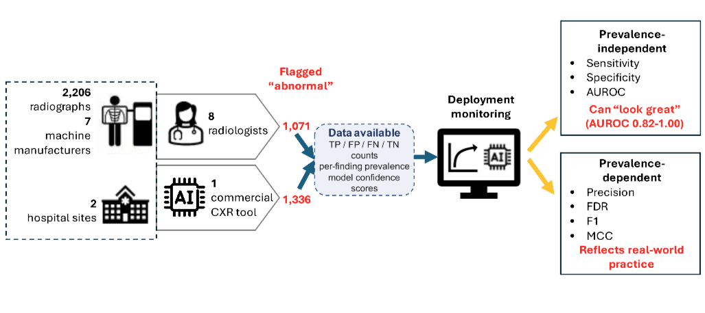

Does it work? Will it work here? Should we use it?
AI papers and product brochures love big numbers. "97% accuracy." "AUROC of 0.98." But a single number does not tell you whether you should actually use a tool on your patients. The honest answer usually lives in what the brochure leaves out.
This lesson walks you through three questions that, taken together, give you a much more complete picture of whether an AI tool is worth using. They build on each other:

Evaluating a commercial CXR AI tool on 2,206 real-world radiographs from 7 scanner manufacturers across 2 hospital sites, compared against 8 radiologist readers.
This figure illustrates a critical distinction in AI evaluation. When we compare AI predictions against radiologist interpretations on real-world radiographs, we can calculate the familiar confusion matrix — true positives, false positives, false negatives, and true negatives. From those four numbers, we derive two categories of performance metrics. Prevalence-independent metrics — sensitivity, specificity, and AUROC — tell you how well the AI discriminates between abnormal and normal cases, and these remain relatively stable regardless of how common the disease is in your population. They answer: "Can this AI tell the difference?" But they do not tell you what happens when you actually deploy the tool.
Prevalence-dependent metrics — precision (PPV), false discovery rate, F1, and MCC — tell you what the AI's predictions mean in practice. An AI with 90% sensitivity and 90% specificity sounds excellent, but if the disease prevalence is only 1%, its precision drops to roughly 8% — meaning over 90% of its positive flags are false alarms. At 30% prevalence, the same AI's precision jumps to 79%. Same model, same sensitivity, same specificity, dramatically different real-world behavior. This is why AUROC can "look great" in a research paper while the tool generates an unmanageable number of false positives in your department. Evaluating AI requires both types of metrics, and the prevalence-dependent ones are the ones that reflect what actually happens at your institution.
Measuring performance
When someone tells you an AI tool "works," the first thing you should ask is: by what measure? There are several ways to quantify how well a model performs, and each one tells you something different. None of them alone is enough.
| Metric | What it tells you | Plain-language example |
|---|---|---|
| Sensitivity | How good is it at catching real problems? | 95% → catches 95 of 100 true pneumothoraces, misses 5 |
| Specificity | How good is it at leaving normal cases alone? | 90% → correctly clears 90 of 100 normals, falsely flags 10 |
| PPV | When it flags something, how often is it right? | Depends on how common the disease is in your population |
| NPV | When it says "normal," how often is it right? | High NPV → you can trust a negative result |
| AUROC | Overall ability to separate sick from healthy | 1.0 = perfect, 0.5 = coin flip. Most AI papers report this |
| Calibration | Does its confidence match reality? | "80% confident" should mean it is right ~80% of the time |
These two are the foundation. Sensitivity asks: of everyone who is actually sick, how many did the AI catch? Specificity asks the opposite: of everyone who is actually healthy, how many did the AI leave alone?
There is almost always a tradeoff. Cranking up sensitivity (catching more true positives) usually means more false positives, which lowers specificity. Where you set that threshold depends on the clinical context. For a screening tool looking for cancer, you probably want very high sensitivity even at the cost of more false alarms. For a triage tool that bumps studies to the top of the worklist, false positives are annoying but not dangerous.
Here is where things get tricky. PPV and NPV depend not just on how good the model is, but on how common the disease is in the population you are screening. A tool with 95% sensitivity and 95% specificity sounds great — but if the disease only affects 1 in 1,000 people, the vast majority of "positive" results will be false positives. The PPV drops to around 2%.
This is one of the most common blind spots in AI evaluation. A model validated in a high-prevalence academic center (where sick patients are concentrated) will look much less impressive when deployed in a low-prevalence outpatient clinic.
AUROC is the number you will see in virtually every AI paper. It summarizes the model's ability to distinguish positive from negative cases across all possible thresholds. The problem is that a high AUROC does not guarantee useful performance at any specific operating point.
Two models can have the same AUROC but behave very differently in practice — one might be great at catching rare diseases but terrible at avoiding false alarms, while the other has the opposite profile. Always look beyond the headline number to see what the sensitivity and specificity actually are at the threshold being used clinically.
Understanding limitations
Strong numbers in a paper are a starting point, not a guarantee. The performance a model achieves in the study that validated it will almost always be better than what you see in real life. The question is how much worse it gets, and whether it still does something useful.
Most AI models are trained on data from a handful of institutions, often large academic centers with specific patient demographics and scanner hardware. A chest X-ray AI trained on PA films from young, thin patients at a single site may struggle with AP portable studies on older, obese, or intubated patients at a community hospital.
Bias in AI is not always about race or gender (though those matter). It can also be about body habitus, scanner manufacturer, image acquisition protocol, or disease prevalence. Any systematic difference between the training data and your patient population is a potential source of failure.
A pulmonary embolism detection AI reports 96% sensitivity in its validation study. You look closer and see the dataset was 80% from a single European academic center, included only contrast-enhanced CT angiograms, and excluded patients with BMI above 40. Your ED population is 40% obese, and your technologists sometimes run suboptimal bolus timing. Do you still trust the 96%?
Internal validation means the model was tested on held-out data from the same institution where it was trained. The patients, scanners, and protocols are all familiar. External validation means it was tested at sites that had nothing to do with its development — different scanners, different demographics, different workflows.
If an AI tool has only been validated internally, treat its performance numbers with real skepticism. External validation is the minimum standard for trusting that a tool will work beyond its home turf. Even then, your institution might differ in ways that neither the internal nor external validation sites captured.
Even a well-validated model can degrade over time. Scanners get replaced. Imaging protocols change. The patient population shifts. A model trained on 2020 data may not perform the same way in 2026 because the world it was built for no longer exists.
This is why AI tools need ongoing monitoring after deployment. You cannot validate a tool once and assume it will keep working forever. Some institutions run periodic performance audits; most do not, and that is a problem.
Clinical and ethical considerations
A tool can have strong numbers and generalize well, and you should still think carefully about whether to use it. Performance metrics tell you what the AI can do. These questions are about what it should do, and what happens to people when it gets things wrong.
Does this tool actually change what you do in a way that helps patients? A model with a high AUROC that does not change management, does not speed up care, and does not catch things you were already catching has statistical performance but no clinical value. "It works" and "it is useful" are not the same thing.
Ask: if I took this tool away tomorrow, what would patients lose? If the answer is "nothing," the tool is not providing clinical utility — no matter how good the numbers look.
This connects directly to what we covered in Lesson 1. When an AI tool is always running in the background, it is tempting to defer to its judgment — especially when you are tired, rushed, or uncertain. Automation bias is the tendency to accept AI output without critically evaluating it yourself.
The risk is different depending on experience level:
An AI chest X-ray tool flags a subtle right lower lobe opacity as a possible pneumonia. The radiologist glances at it, sees the AI highlight, and dictates "right lower lobe airspace opacity, likely pneumonia." Without the AI flag, she would have looked more carefully and noticed that the "opacity" is actually a skin fold overlying the lung field. The AI was wrong, and the radiologist accepted it because the highlight made it look convincing.
Automation bias is not a personal failing — it is a predictable consequence of working alongside a system that is right most of the time. The more accurate the AI, the harder it is to maintain the discipline to verify its output independently. Study design, training, and institutional culture all play a role in managing this risk.
When an AI tool contributes to a wrong diagnosis, who is responsible? The developer who built it? The hospital that purchased and deployed it? The radiologist who signed the report? Right now, the legal answer in most jurisdictions is that the physician who makes the final clinical decision bears responsibility — regardless of what the AI recommended.
This raises a practical question: if you are legally responsible for the decision, you need to be able to evaluate the AI's output independently. That means maintaining the clinical skills to disagree with the AI when it is wrong — which brings us back to the never-skilling, deskilling, and mis-skilling risks from Lesson 1.
The next time you encounter an AI tool — in a paper, a product demo, or your clinical workflow — run it through these three questions:
Most AI papers and product sheets focus almost entirely on the first question. The second gets some attention. The third is usually left out entirely. Your job is to ask all three.
You will not be asked to deploy AI tools anytime soon, but you will read papers that use these metrics and see AI outputs during clinical rotations. Being able to look at a reported AUROC and ask "but what was the prevalence in that dataset?" puts you ahead of most people in the room.
Your department may already use AI triage or detection tools. Think about a specific tool you have encountered: can you answer all three questions about it? If not, that gap in your understanding is worth investigating — especially question two. The published performance of that tool was almost certainly measured on a different patient population than the one walking through your ED.